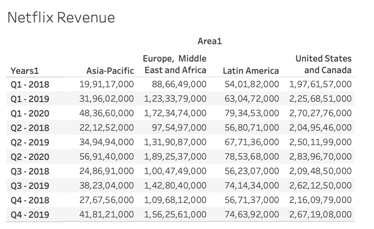
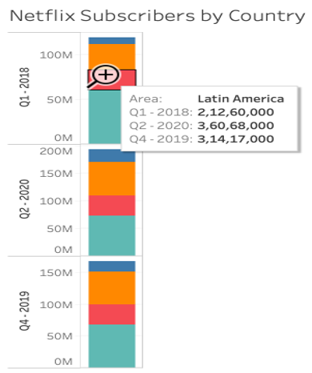

OTT - NetFlix Revenue data

VIZUALIZATION TOOL USED: Tableau
- This Table idiom we are having NetFlix revenue statistics for different continents from Q1 - 2018 to Q4 - 2019.
Type of Idiom: Text Tables
OTT - NetFlix Revenue data
VIZUALIZATION TOOL USED: PowerBI
- We can see there is steady increase in the stock pricing of Netflix during COVID19 (2019-2020).
- This idiom is giving information about people adapting to home based entertainment because of global lockdown.
Type of Idiom: Line Chat
OTT - NetFlix Revenue data
VIZUALIZATION TOOL USED: PowerBI
- In this bar chart, the revenue of Netflix has steadily increased. This could be a captivating evidence that people have been more adapted to OTT platforms because of lockdown restrictions.
- This high revenue increase would redefine the high-growth entertainment industry towards home-based and reinventing new paths.
Type of Idiom: Bar Chat
OTT - NetFlix Revenue data
VIZUALIZATION TOOL USED: Tableau
- Those above clusted bubble’s size represents it’s revenue, we could find that for each quarter the bubble size has been increased.
- For every quarter, the raise in the area is telling that paid user base of Netflix platform is increased rapidly
Type of Idiom: Clustered Stacked Bubbles.
OTT - NetFlix Revenue data
VIZUALIZATION TOOL USED:VizHub
- This bar chart represents, Netflix stocks opening day price, we observe there is always a steady increase in its values. We should also note that opening data stock price need not be dependent on last closed pricing.
- This represents, due to the high revenue and increase subscribers, investors were interested in its stocks.
Type of Idiom: Time series clustered bar chart.
OTT - NetFlix Revenue data
VIZUALIZATION TOOL USED: VizHub
- This bar chart represents Netflix closing price also known as the last price at which a stock trades during a regular trading session. Compared with opening prices, the closing prices weren’t affected and steadily increased.
- As said, investors understand home based entertainment has a future and are interested in Netflix stocks.
Type of Idiom: Time series clustered bar chart.
OTT - NetFlix Subscribers data
VIZUALIZATION TOOL USED: Tableau
- This bar chart shows subscriber count per quarter.
- Subscriber count has been rapidly increased over the COVID-19 period and reached 193M subscriber base
Type of Idiom: Clustered Bar Chart
OTT - NetFlix Subscribers data
VIZUALIZATION TOOL USED: PowerBI
- This line chart is drawn for worldwide Netflix users on a quarter basis. The user base steadily increased till the period of Q1-2019.
- We can observe a started sudden increase after Q1-2019 and grown more rapidly (high slope) after Q4-2019 in just an year.
Type of Idiom: Line Chart
OTT - NetFlix Subscribers data
VIZUALIZATION TOOL USED: PowerBI
- This categorical column chart represents worldwide user base of Netflix of three quarter years.
- This plot shows that at least 10 percentile to the previous quarter has been per quarter during COVID-19 time. And in just two years, the user base is doubled.
Type of Idiom: Clustered Column Chart
OTT - NetFlix Subscribers data
VIZUALIZATION TOOL USED: Tableau
- his stacked chart represents, netflix users by different regions. We can observe that in all the prime regions the user base has significantly increased, from Q1-2018 to Q2-2020
- Among all regions, Asia region has more raise in the user base
Type of Idiom: Stacked Bars
OTT - NetFlix Subscribers data
VIZUALIZATION TOOL USED: Tableau
- This chart represents the user base raise over different quarters. A major increase can be observed in Europe and the Middle East.
- Apart from the above two regions, other regions had a significant increase.
Type of Idiom: Scattered Strip Plots
OTT - NetFlix Subscribers by Countries data
VIZUALIZATION TOOL USED: PowerBI
- Above bar charts represents user growth on a random sample of three quarters between 2018 to 2020. As seen in the above chart, comparing from Q1-2018 to Q2-2020, regions like Middle East, Europe and Africa have almost double the user base in just two years. It could be an evident that people in these regions have
- We can also see that, in major regions like Asia-Pacific has double it’s user base even though it is very small compared to North America
Type of Idiom: Clustered Bar Chart
OTT - NetFlix Subscribers by Countries data

VIZUALIZATION TOOL USED: Tableau
- This chart shows Netflix subscribers for three random quarters, Latin America has almost increase of 50% user base compared to Q1-2018
- For the rest of the regions it has at least 50% increase in just five quarters.
Type of Idiom: Weighted Bar Chat